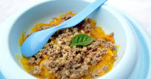

Kasica od šargapere krompira i teletine
Vreme pripreme:45minuta

Sastojci:
50g teletine
2 šargarepa
1 krompir
Postupak spremanja:
Prokuavti teletinu 45 minuta zatim dodati iseckanu šaragarepu i krompir očistiti iseći i skuvati. Nakon toga izmikasati i dodati maslinovo ulje.
Vaš komentar:
Ovo je mesto za Vaš komentar...